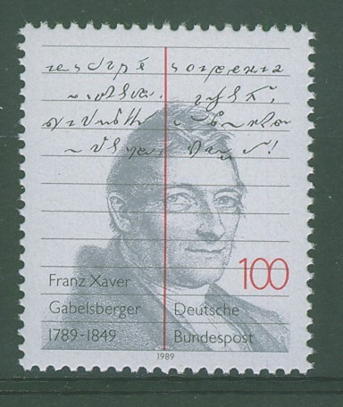
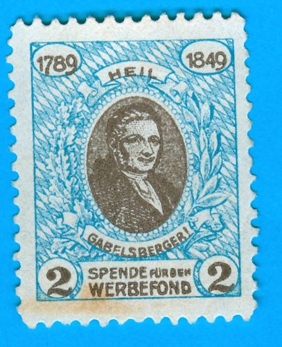

International
InternationalStenografia na poczcie
2010-12-18 | autor: flamenco108Stenografia miała swój udział w życiu codziennym, czym zasłużyła sobie, żeby ją upamiętnić np. na znaczkach pocztowych. Upamiętnienie to odbywało się znacznie intensywniej w krajach, w których doceniono wagę stenografii bardziej, niż u nas.
Kubański znaczek z portretem Johna Roberta Gregga
Na znaczku powyżej widać portret Johna Roberta Gregga. Znaczek wydany na Kupie, z pewnością tej przedfidelowej. Cóż, była ona wtedy tym, czym dziś jest Puerto Rico - zagłębiem turystycznym i kopalnią taniej siły roboczej. Jednakoż JR. Gregg sfinansował tłumaczenie swojego systemu na hiszpański, zapewne dzięki tak silnemu udziałowi USA w krajach Ameryki Łacińskiej. I tak system Gregga stał się znaczącym konkurentem rodzimych wynalazków, postępującym wraz amerykańskimi dolarami.

Znaczek rocznicowy, wydany w 1989 roku, ku pamięci Franciszka Ksawerego Gabelsbergera, twórcy najdoskonalszego systemu stenograficznego na świecie. Na bazie jego metody powstały systemy praktycznie dla wszystkich języków europejskich, dobrze dopasowane i pozwalające na stenografię korespondencyjną, czyli zapis możliwy do odczytania także przez inne osoby. Innymi słowy stworzył podstawy nowej metody pisania, która, niestety, w konkurencji z nowoczesnymi formami kursywnymi, które tworzono na użytek szkół w połowie XIX wieku, w równym boju przegrała, ponieważ odpowiedzialni za edukację totalną obawiali się, że przy pomocy pisma stenograficznego pisać mogą tylko najzdolniejsi. Nie jest to prawdą, kto nie wierzy, niech poczyta, z czego jest zbudowane i jak się używa klasycznego pisma mongolskiego, a przekona się, że nie takie łamańce potrafią wyczyniać zwykłe, codzienne abecadła.

Szacunek dla Gabelsbergera to nie żadna nowość, honorowano go już pierwszymi, jeszcze niezbyt ładnymi znaczkami pocztowymi. Cóż, w Niemczech liczba stenografów jego systemu przekroczyła na początku XX wieku 200 tysięcy, a licząc z adeptami wszystkich systemów pochodnych, mogła by, być może, sięgnąć pół miliona. Ludzie ci mieli wielki udział w rozwoju nowoczesnych Niemiec, jako urzędnicy i naukowcy.

Kiedy Stowarzyszenie Stenografów i Maszynistek w Polsce doczekało się wreszcie państwowego mecenatu, i ono nie zapomniało o stosownym obchodzeniu rocznic. Oto pocztówka okolicznościowa z roku 1961, czyli stulecia opublikowania najpopularniejszego polskiego systemu stenograficznego - Gabelsbergera-Polińskiego.
2010-12-18 autor: flamenco108